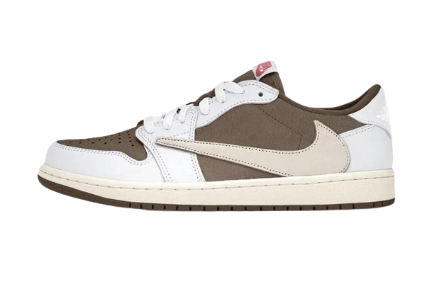
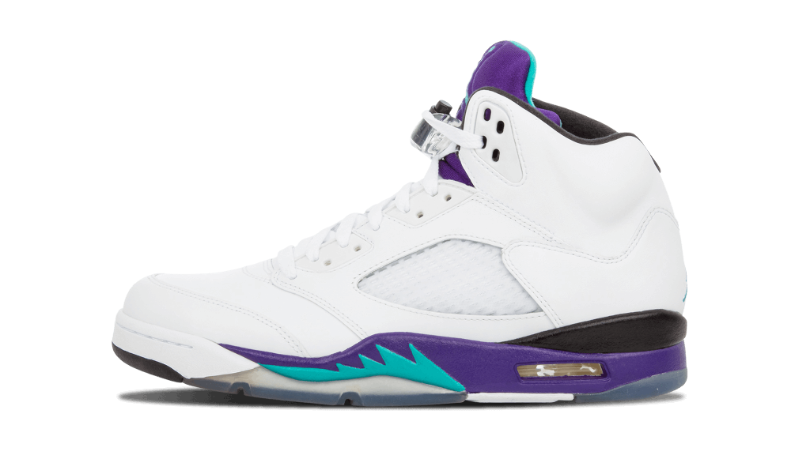

It landed when many sneakerheads started coming around to the idea that pared-back, neutral palettes could be the way forward for a sneaker world that was reaching something like terminal velocity.
Air Jordan 1 Retro High University Blue Black
Jordan Brand paid homage to MJ's alma mater with the Air Jordan 1 High University Blue.
Travis Scott x fragment x Air Jordan 1 High "Military Blue"
The resulting design finds the foundational sneaker dressed in white tumbled leather with Scott's signature inverted Swoosh in contrasting black leather.

Travis Scott x Air Jordan 1 Low "Reverse Mocha"
The Travis Scott x Air Jordan 1 Low “Reverse Mocha” flips 2019's “Dark Mocha” with a mix of “Sail/University Red/Ridgerock.”
Air Jordan 1 Low “Vintage Grey”
This offering of the Air Jordan 1 Low features a White leather base with Grey overlays, Swooshes, laces, tongue Jumpman and rubber outsole.
Air Jordan 1 Low “Smoke Grey Toe”
Inspired by the original that debuted in 1985, the Air Jordan 1 Low offers a clean, classic look that's familiar yet always fresh.
Air Jordan 4 Neon "Air Max 95 Neon"
The Jordan 4 is composed of a tonal grey upper with white netting underlays and neon detailing. A split-color Jordan Flight patch on the tongue, black sole, and patterned laces complete the design.
Nike Air Jordan 11 "Legend Blue"
The Air Jordan 11 Low Legend Blue features an all-white upper constructed of smooth leather and patent leather. Jumpman and "23" insignias are displayed on the back of the ankle.

Air Jordan 5 “Grape”
One of the original four colorways released in 1990, the sneaker was worn by MJ during a Wheaties box cover shoot and by Will Smith on the Fresh Prince of Bel-Air.
Air Jordan 7 “Retro Citrus”
The Air Jordan 7 Retro Citrus 2022 features a Black Durabuck upper, with citrus and red highlights on the sole.
Air Jordan 2 Low SP Titan "Safety Orange"
The Air Jordan 2 Low SP Titan Safety Orange unveils a mixed upper through a mix of materials.
Air Jordan 12 "Playoff"
Originally released in 1997 and worn by Jordan himself during both the 1997 NBA All-Star Game and, as its name suggests, later in the NBA Playoffs, the simple white-and-black colorway has become a fan favorite over the years.
Air Jordan 5 Retro Alternate Bel-Air
Also known as the Jordan 5 Poison Green, the Alternate Bel-Air consists of the same 90s style colors and patterns as its predecessor, only this time the grey upper is replaced with white leather.
Air Jordan 6 Retro Travis Scott British Khaki
The upper of the Air Jordan 6 Retro Travis Scott British Khaki is made of British Khaki suede. From there, hits of Bright Crimson appear on the heel and tongue embroidered logos. The upper also has two cargo pockets: one with a snap enclosure on the lateral ankle and one with a zip enclosure on the medial ankle.
Air Jordan 1 Low "Flyease Bio Hack"
The shoe's perforated leather toe box and the separated lattice cage both rest on a rubber design. Both the toe box and the lattice cage are digitally knit into one piece to reduce waste.
Air Jordan 4 "Zen Master"
The Air Jordan 4 Zen Master features a canvas base with pastel tones reminiscent of the Milky Way and the galaxy. There is the traditional translucent TPU insert on the quarter panel, as well as a few contrasting black accents on the laces, midsole and grid.
Air Jordan 11 Retro "Concord" (2018)
The Concord features a white mesh upper, patent leather inserts and an aerodynamic basketball design. A translucent outsole in grey and blue tones completes the unique architecture of this pair.
Air Jordan 7 Retro "PSG Paris Saint-Germain"
The Air Jordan 7 Retro Paris Saint-Germain features a predominantly white leather overlay construction. This dynamic is broken up by the addition of a mesh panel that reveals shades of blue and red, reminiscent of the PSG colours.
Air Jordan 12 "Stealth"
The Air Jordan 12 Stealth reveals a grained leather upper, divided into two parts. The upper is gray and sublimated by stitching inspired by the sun rays present on the flag of the Japanese Navy.
Air Jordan 6 Retro "Washed Denim"
The Air Jordan 6 Retro Washed Denim features a base made up of alternating denim inserts in three colours. There is a brown leather patch covering part of the laces with a perforated tongue, a Jumpman heel and black laces. The shoe is finished off with a black and white sole with an AIR unit.
Air Jordan 3 Retro "Patchwork Camo"
The Air Jordan 3 Retro Patchwork Camo features a mixed upper with a mix of three different camouflage patterns and a waxed canvas with green suede inserts and brown textile.
Air Jordan 1 Mid Alternate "Bred Toe"
The Air Jordan 1 Mid Alternate Bred Toe features a white leather base with black leather overlays on the mudguard, heel and eyelets. Matching laces accentuate the colourful tongue.
Air Jordan 13 Retro "Obsidian"
The Air Jordan 13 Retro Obsidian features a white leather and navy suede upper. The outsole features a panther paw design and the Jumpman logo in shades of blue and white.
Air Jordan 1 Low SE "Holiday Special"
The Air Jordan 1 Low SE Holiday Special features a black base full of embossed patterns that add texture to the design. There are also green leather overlays and yellow flat laces that match the embroidered Wings logo on the heel. A white leather side Swoosh brings purity and finds support in the midsole.
Air Jordan 9 Retro "Particle Grey"
The Air Jordan 9 Retro Particle Grey features a black synthetic base. Grey leather overlays run from the mudguard to the heel and collar.
Air Jordan 4 Retro "Kaws Grey"
This sneakers features a unique design with a premium suede upper, with long-haired suede contrasting the visual of the pair. The pair adopts near-monochrome grey tones right down to the AIR technology outsole. There is also a translucent glow-in-the-dark outsole with the artist's artwork on it.
Air Jordan 1 Low "Light Madder Root"
The Air Jordan 1 Low Light Madder Root features an off-white suede upper with madder root inspired coral leather overlays.
Air Jordan 5 Retro "Anthracite"
The Air Jordan 5 Retro Anthracite features a suede and textile upper with reflective elements on the TPE mesh and eyelets. Michael Jordan's symbolic number"23" is featured on the quarter panel. The tribute continues in the blue Jumpman on the icy outsole.
Air Jordan 1 Mid Fearless Edison Chen CLOT
The Jordan 1 Mid Fearless Edison Chen CLOT features a grey satin nylon upper with embroidery throughout. Black detailing is found on the laces, tongue and side swooshes, which are embroidered in a zig-zag pattern on the toe to make them almost disappear.
Air Jordan 3 "Electric Green"
The Air Jordan 3 Electric Green features a black leather base, combined with grey inserts Elephant PrintThe shoe features a black leather base, paired with grey inserts that match the style of the silhouette, as well as an electric green and fluorescent tongue.
Air Jordan 1 Mid SE "Lightbulb"
The Air Jordan 1 Mid SE Lightbulb features a white leather upper with purple, green, orange and yellow suede inserts. A black leather swoosh, matching the laces and outsole, completes the design of this feminine looking pair.
Air Jordan 6 Retro "Hare"
The Air Jordan 6 Retro Hare features a light grey leather base with white leather overlays. Red accents on the outsole, tongue and back pull contrast with the rest of the upper.
Air Jordan 5 Retro "Racer Blue"
The Air Jordan 5 Retro Racer Bluefeatures a black suede upper with subtle blue detailing on the midsole and Jumpman branding. The carefully embroidered branding covers the silver 3M reflective tongue and heel.
Air Jordan 1 Low "Ice Blue Black"
The Air Jordan 1 Low Ice Blue Black reveals a cream leather base that matches the tongue as well as the laces. Several layers of light blue UNC-style leather adorn the rest of the trendy upper.
Air Jordan 4 Retro Off-White Sail
The Air Jordan 4 Retro Off-White Sail features a monochrome upper with an ultra vintage feel. The cream-coloured leather base is combined with a gridded side cage and some synthetic elements such as the Wings and the frosted TPU heel.